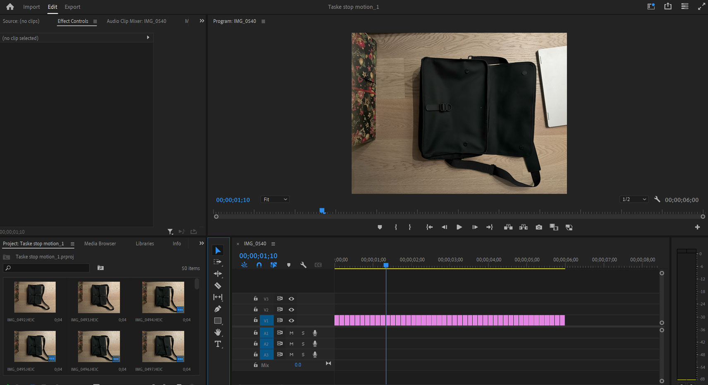
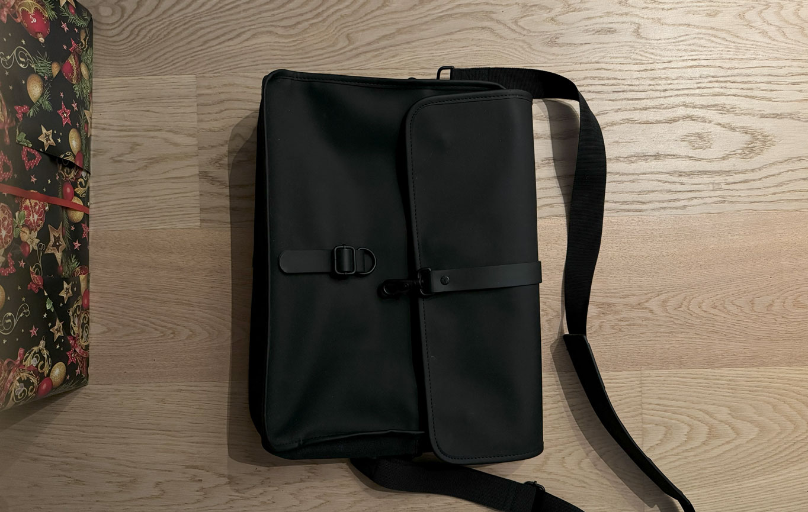

Stop motion

Har lavet en lille stop motion video der kunne være en kreativ måde at lave en video omkring hvad man har i sin taske.
Videoen er redigeret i Adobe Premiere og er skudt med en Iphone 15 Pro. Så ikke noget fancy udstyr.

Processen
Min proces var mest inspiration fra youtube og hvordan man kan bruge stop motion til at gøre noget simpelt og kedelig man har set mange gange, til noget der lige pludselig fanger en.

Link til video
https://youtu.be/ZE_fEqBuDcE